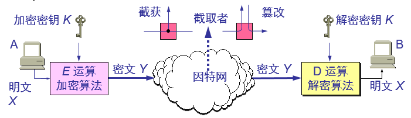

一般的数据加密模型

对称密钥密码体制
加密密钥与解密密钥是相同的密码体制,也是所谓常规密钥密码体制
数据加密标准 DES
数据加密标准 DES 属于常规密钥密码体制，是一种分组密码。
在加密前，先对整个明文进行分组。每一个组长为 64 位。
然后对每一个 64 位 二进制数据进行加密处理，产生一组 64 位密文数据。
最后将各组密文串接起来，即得出整个的密文。
使用的密钥为 64 位（实际密钥长度为 56 位，有 8 位用于奇偶校验)。
在加密前，先对整个明文进行分组。每一个组长为 64 位。
然后对每一个 64 位 二进制数据进行加密处理，产生一组 64 位密文数据。
最后将各组密文串接起来，即得出整个的密文。
使用的密钥为 64 位（实际密钥长度为 56 位，有 8 位用于奇偶校验)。
DES 的保密性
DES 的保密性仅取决于对密钥的保密，而算法是公开的。尽管人们在破译 DES 方面取得了许多进展，但至今仍未能找到比穷举搜索密钥更有效的方法。
DES 是世界上第一个公认的实用密码算法标准，它曾对密码学的发展做出了重大贡献。
目前较为严重的问题是 DES 的密钥的长度。
现在已经设计出来搜索 DES 密钥的专用芯片
DES 是世界上第一个公认的实用密码算法标准，它曾对密码学的发展做出了重大贡献。
目前较为严重的问题是 DES 的密钥的长度。
现在已经设计出来搜索 DES 密钥的专用芯片
公钥密码体制
公钥密码体制使用不同的加密密钥与解密密钥，是一种“由已知加密密钥推导出解密密钥在计算上是不可行的”密码体制。
公钥密码体制的产生主要是因为两个方面的原因，一是由于常规密钥密码体制的密钥分配问题，另一是由于对数字签名的需求。
最著名的公钥密码体制是RSA 体制。
由于目前公钥加密算法的开销较大，在可见的将来还看不出来要放弃传统的加密方法。公钥还需要密钥分配协议，具体的分配过程并不比采用传统加密方法时更简单。
公钥密码体制的产生主要是因为两个方面的原因，一是由于常规密钥密码体制的密钥分配问题，另一是由于对数字签名的需求。
最著名的公钥密码体制是RSA 体制。
加密密钥与解密密钥
在公钥密码体制中，加密密钥(即公钥) PK 是公开信息，而解密密钥(即私钥或秘钥) SK 是需要保密的。
加密算法 E 和解密算法 D 也都是公开的。
虽然秘钥 SK 是由公钥 PK 决定的，但却不能根据 PK 计算出 SK。
任何加密方法的安全性取决于密钥的长度，以及攻破密文所需的计算量。在这方面，公钥密码体制并不具有比传统加密体制更加优越之处。加密算法 E 和解密算法 D 也都是公开的。
虽然秘钥 SK 是由公钥 PK 决定的，但却不能根据 PK 计算出 SK。
由于目前公钥加密算法的开销较大，在可见的将来还看不出来要放弃传统的加密方法。公钥还需要密钥分配协议，具体的分配过程并不比采用传统加密方法时更简单。
公钥算法的特点
发送者 A 用 B 的公钥 PKB 对明文 X 加密（E 运算）后，在接收者 B 用自己的私钥 SKB 解密（D 运算），即可恢复出明文；
解密密钥是接收者专用的秘钥，对其他人都保密；
加密密钥是公开的，但不能用它来解密；
加密和解密的运算可以对调
在计算机上可容易地产生成对的 PK 和 SK。
从已知的 PK 实际上不可能推导出 SK，即从 PK 到 SK 是“计算上不可能的”。
加密和解密算法都是公开的。

解密密钥是接收者专用的秘钥，对其他人都保密；
加密密钥是公开的，但不能用它来解密；
加密和解密的运算可以对调
在计算机上可容易地产生成对的 PK 和 SK。
从已知的 PK 实际上不可能推导出 SK，即从 PK 到 SK 是“计算上不可能的”。
加密和解密算法都是公开的。